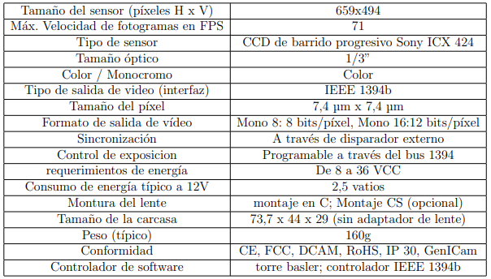

BASLER

Sus especificaciones técnicas son:

Gracias al tipo de montura de esta cámara es posible hacer fotografía para microscopia así como diversas aplicaciones.
Sus especificaciones técnicas son:
Gracias al tipo de montura de esta cámara es posible hacer fotografía para microscopia así como diversas aplicaciones.